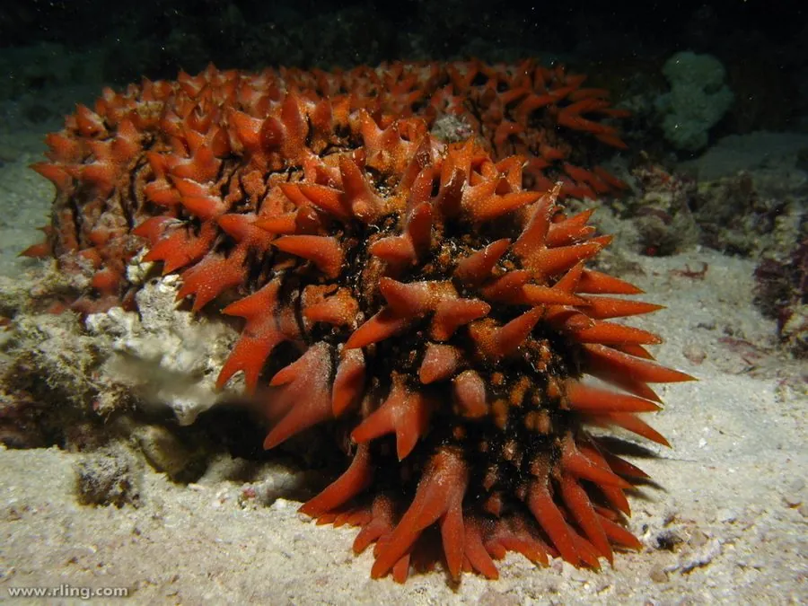

其他无脊椎动物 · 动物界
梅花参 Thelenota ananas

世界上最大的海参之一，体长可达 1 m，体表有大肉刺，分布于西太平洋珊瑚礁，是名贵的食用海参。
- 分类
- 门棘皮动物门纲海参纲目楯手目科刺参科属梅花参属
- 栖息环境
- 西太平洋热带珊瑚礁的沙底和礁缘浅水区
- 地理分布
- 中国南海、东南亚、澳大利亚北部和太平洋岛屿
- 保护级别
- 暂无评估；野生资源受过度捕捞影响
物种志
梅花参是世界上最大的海参之一，体长可达 70 cm 至 1 m，身体呈长筒形，背面长有大型肉刺，肉刺基部宽大、顶端分叉，排列成梅花状，因此得名；体色多为橙黄、红褐或黄褐色，腹面管足密集。
它生活在西太平洋热带珊瑚礁的沙底和礁缘，水深通常几米到几十米，取食沉积物中的有机碎屑、藻类和微小生物。梅花参行动缓慢，靠管足在海底爬行，遇到危险时会收缩身体。它分布于中国南海、东南亚、澳大利亚北部和太平洋岛屿，是名贵的食用海参，因过度捕捞，野生资源在多地明显下降。目前梅花参的人工养殖和增殖研究正在推进，以减轻对野生种群的捕捞压力。
形态与习性
- 食性取食沉积物中的有机碎屑、藻类和微生物
- 体长可达 70 cm 至 1 m，是世界最大海参之一
- 形态背面有大型肉刺，排列成梅花状
- 栖息热带珊瑚礁沙底和礁缘浅水区
- 经济名贵食用海参，价格较高
- 保护野生资源受过度捕捞影响，需增殖保护
趣味知识
- 梅花参是世界上最大的海参之一，体长能接近 1 米。
- 它背面的肉刺排列成梅花状，因此得名梅花参。
- 由于过度捕捞，野生梅花参的资源在多地明显减少。